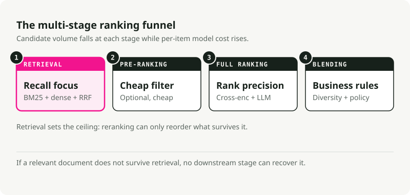
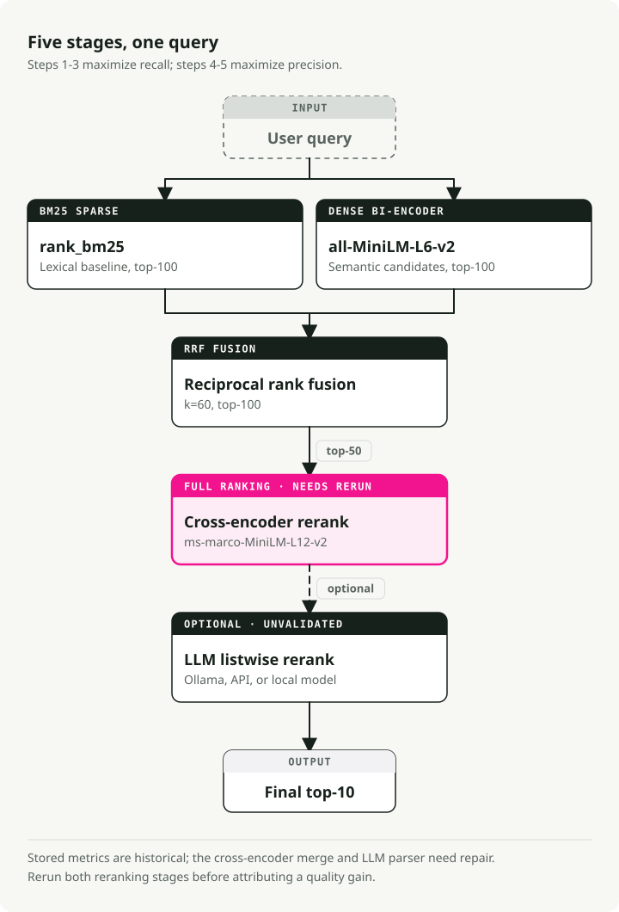
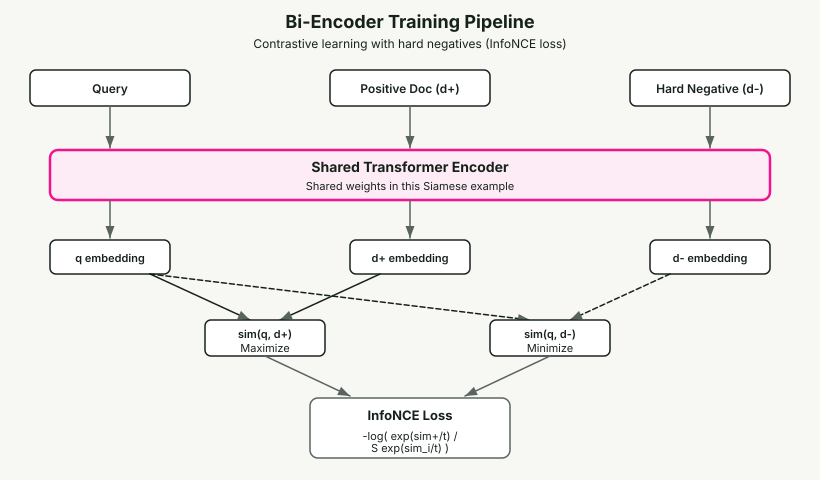
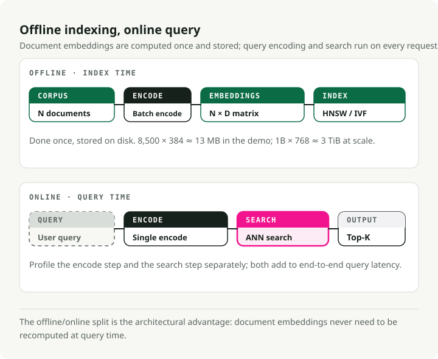
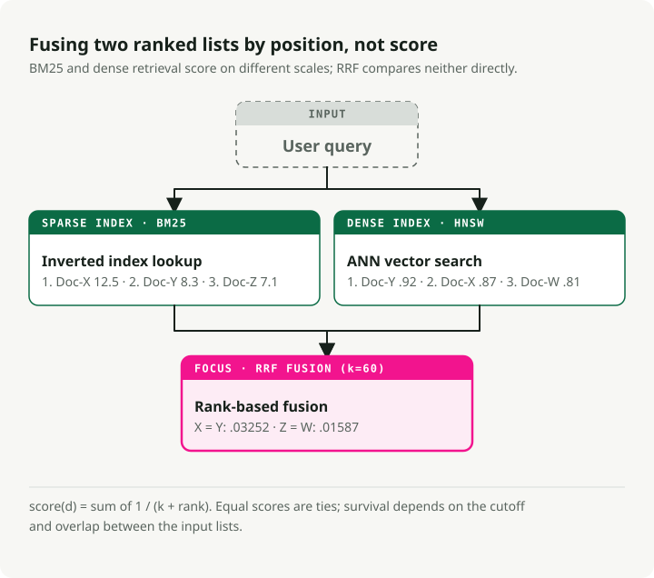
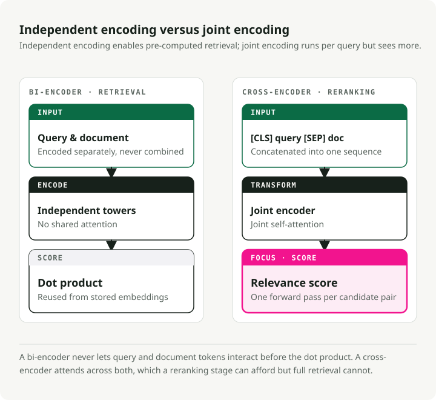
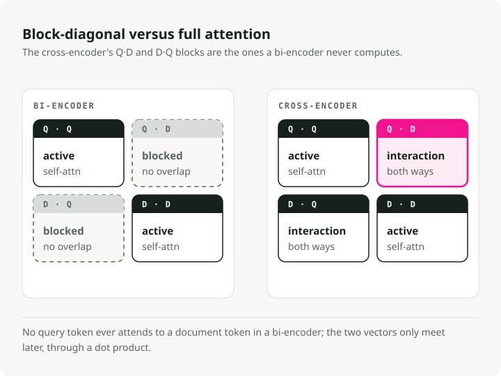
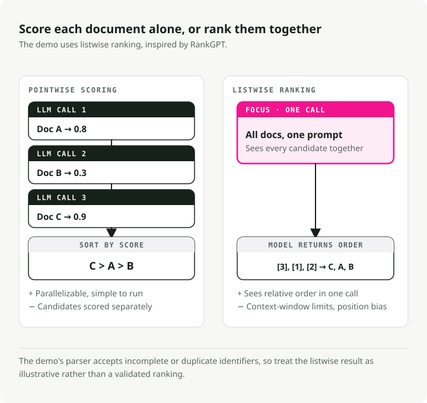
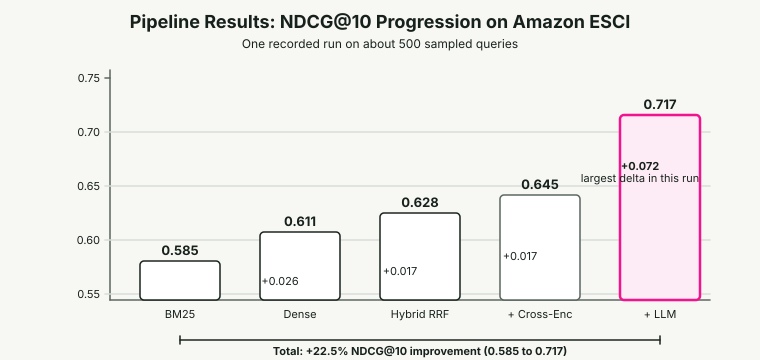
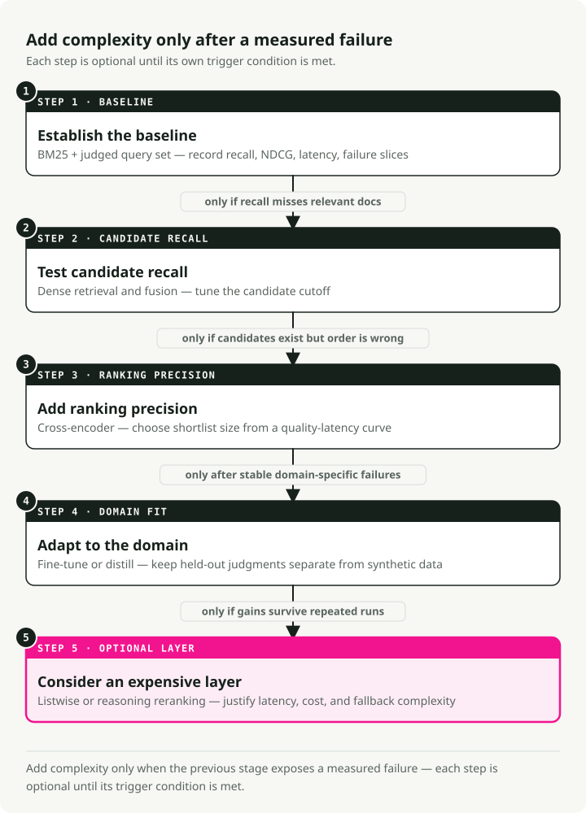

Search Ranking Stack in 2026: BM25, Embeddings, Cross-Encoders, and LLM Reranking
Search stopped being a string-matching problem a while ago. When someone types "wireless headphones" into a product search engine, they expect more than items containing those two words. They want the best result given semantic relevance, product quality, user preferences, and availability. The gap between what BM25 returns and what users actually want has changed how search systems get built.
This post walks through a modern search ranking stack: a multi-stage pipeline combining BM25 sparse retrieval, dense semantic embeddings, reciprocal rank fusion, cross-encoder reranking, and LLM listwise ranking. I built a working demo that benchmarks each stage on the Amazon ESCI product search dataset, so every layer's contribution shows up in real numbers.
TL;DR: A multi-stage hybrid pipeline is the production-friendly default. Run BM25 and dense retrieval in parallel, fuse them with Reciprocal Rank Fusion, rerank the survivors with a cross-encoder, and let an LLM handle the final precision layer. On the Amazon ESCI benchmark this gets a 22.5% NDCG@10 improvement over BM25 alone (0.585 to 0.717). The LLM reranker contributes the single largest jump (+0.072).
Search ranking stack by use case
The production stack is a funnel, but the right funnel depends on the query and business surface.
| Use case | Best starting stack | Why |
|---|---|---|
| Product search | BM25 + dense retrieval + RRF + cross-encoder | Handles exact attributes, synonyms, and ranking precision |
| Documentation search | Hybrid retrieval + cross-encoder reranking | Exact API names and semantic explanations both matter |
| Support deflection | Hybrid retrieval + answer citation verifier | The answer must be grounded, not only relevant |
| Marketplace or listings | Lexical filters + dense retrieval + business reranker | Availability, freshness, and policy constraints affect rank |
| Small internal corpus | BM25 + reranker first | Dense indexes may add little until vocabulary mismatch appears |
| High-stakes legal or medical search | Hybrid retrieval + conservative reranking + human review | Recall matters more than elegant generated answers |
Start with BM25 as the baseline. Add dense retrieval when vocabulary mismatch hurts recall. Add a cross-encoder when the first page has the right candidates in the wrong order. Add an LLM only after you can afford the latency and can evaluate the ranking decisions.
How we got here
Search ranking moved through three rough phases, each one fixing a specific limitation of what came before. The modern stack only makes sense if you've seen the path it took.
BM25 and lexical retrieval
For decades, BM25 was the default. It's a probabilistic model that scores documents by the frequency of query terms in the document, normalized by document length and inverse document frequency (IDF).
BM25 is great at exact keyword matching. Searching for a specific error code, product SKU, or HTTP status code works because the system only needs literal token overlap. The catch is the vocabulary mismatch problem: a query for "cheap laptop" misses documents about "budget notebook computer" because the words don't line up. BM25 has no notion of semantic intent.
That said, BM25 is a solid baseline. It scores 0.429 average nDCG@10 across the BEIR benchmark's 18 datasets and still beats some neural models on argumentative retrieval tasks like Touche-2020.
Dense retrieval and embeddings
BERT and the Transformer brought dense retrieval. Instead of matching keywords, you map both queries and documents into a shared high-dimensional vector space (typically 768 or 1024 dimensions). Relevance becomes a cosine similarity between two vectors.
The bi-encoder (or "two-tower") architecture processes the query and document independently through separate encoder towers, producing fixed-length embeddings. Document vectors can be pre-computed and indexed offline, then retrieved fast via Approximate Nearest Neighbor (ANN) algorithms. Now "cheap laptop" and "budget notebook" land close together in vector space.
Under the hood, bi-encoders use a Siamese architecture (Sentence-BERT, Reimers & Gurevych, EMNLP 2019): both towers share the same Transformer weights. Each tower processes its input text, then mean-pools the token-level hidden states into a single fixed-length vector (384 or 768 dimensions are common). Weight sharing puts queries and documents into the same semantic space, which is what makes cosine similarity meaningful in the first place.
These models are trained with contrastive learning, usually with the InfoNCE loss. Given a batch of (query, positive_document) pairs, the objective maximizes sim(query, positive_doc) while minimizing sim(query, negative_docs). Negatives come from other queries' positives in the same batch (in-batch negatives). A temperature parameter \(\tau\) controls how sharp the distribution is: lower values push the model to make harder distinctions between positives and negatives.
The biggest lever for bi-encoder performance is training data quality. Models start from (query, positive_document) pairs from datasets like MS MARCO, then augment with hard negatives — documents the current model ranks highly but that aren't actually relevant. Random negatives are too easy and give the model nothing to learn from. Hard negatives force it to learn subtle distinctions. The SimANS framework (Zhou et al., EMNLP 2022) formalizes this: exclude easy negatives (too low rank) and potential false negatives (too high rank), and train on the "hard middle ground."
The cost is the representation bottleneck. Bi-encoders compress all semantic nuance into a single fixed-size vector, so they often miss fine-grained interactions between specific query terms and specific document content.
Cross-encoders and LLMs
Cross-encoders (Nogueira & Cho, 2019) feed the query and document into a Transformer together as a concatenated sequence ([CLS] Query [SEP] Document), so every query token can attend to every document token through full self-attention. That deep interaction picks up nuance that independent encoding misses.
LLM reranking pushes this further. A large language model acts as a zero-shot listwise ranker — effectively a human judge that can reason about why one document is better than another. RankGPT (Sun et al., EMNLP 2023 Outstanding Paper) showed that GPT-4 as a zero-shot listwise reranker matches or beats supervised methods.
Precision is strong. So is the cost. You can't pre-compute scores, and inference is 100x slower than bi-encoder retrieval. That cost is what forces the architectural pattern you see in modern search: the multi-stage funnel.
The multi-stage funnel
Running an expensive cross-encoder or LLM across millions of documents isn't viable, so modern search stacks use a funnel. Each stage filters the candidate pool down while model complexity goes up.
A single-stage search is either too slow (complex models on everything) or too imprecise (simple models everywhere). The funnel splits the difference, and it's the standard production layout at scale.

| Stage | Candidate Pool | Primary Objective | Model Complexity | Latency Budget |
|---|---|---|---|---|
| Retrieval | 10^9 - 10^12 | Maximum Recall | Low (BM25, Bi-Encoders) | < 50ms |
| Pre-Ranking | 10^4 - 10^5 | Efficient Filtering | Medium (Two-Tower, GBDT) | < 100ms |
| Full Ranking | 10^2 - 10^3 | Maximum Precision | High (Cross-Encoders, LLMs) | < 500ms |
| Blending | 10^1 - 10^2 | Diversity and Safety | Rules and Multi-Objective | < 20ms |
Retrieval sets the ceiling and reranking optimizes within it. If a relevant document doesn't survive retrieval, no downstream model can recover it.
The demo: a five-stage pipeline
To make this concrete, I built a search-ranking-stack demo that runs a five-stage pipeline on the Amazon ESCI product search benchmark. Each stage gets measured independently so you can see where the gains actually come from.

The pipeline:
- BM25 Sparse Retrieval — lexical baseline (rank_bm25)
- Dense Bi-Encoder Retrieval — semantic search (all-MiniLM-L6-v2)
- Hybrid RRF Fusion — combines sparse and dense results
- Cross-Encoder Reranking — fine-grained relevance scoring (ms-marco-MiniLM-L-12-v2)
- LLM Listwise Reranking — reasoning-powered final ranking (Ollama / Claude / local)
Steps 1--3 are the retrieval stage of the funnel (maximize recall); steps 4--5 are the full ranking stage (maximize precision). The demo skips pre-ranking and blending. At ~8,500 documents, you can afford to send all hybrid results directly to reranking.
Quick Start
git clone https://github.com/slavadubrov/search-ranking-stack.git
cd search-ranking-stack
uv sync
# Download and sample ESCI dataset (~2.5GB download, ~5MB sample)
uv run download-data
# Run the full pipeline (without LLM reranking)
uv run run-all
# Run with LLM reranking via Ollama
uv run run-all --llm-mode ollama
The Dataset: Amazon ESCI
The demo uses the Amazon Shopping Queries Dataset (ESCI) from KDD Cup 2022 — a real product search benchmark with four-level graded relevance labels:
| Label | Gain | Meaning | Example (Query: "wireless headphones") |
|---|---|---|---|
| Exact (E) | 3 | Satisfies all query requirements | Sony WH-1000XM5 Wireless Headphones |
| Substitute (S) | 2 | Functional alternative | Wired headphones with Bluetooth adapter |
| Complement (C) | 1 | Related useful item | Headphone carrying case |
| Irrelevant (I) | 0 | No meaningful relationship | USB charging cable |
Graded relevance matters because it lets you use NDCG (Normalized Discounted Cumulative Gain), which separates a "perfect" ranking from a "merely adequate" one. Binary metrics treat both as equally relevant and can't tell apart different levels of relevance at the same position.
I sampled ~500 "hard" queries (the small_version flag in ESCI) with ~8,500 products and ~12,000 judgments. Small enough to run on a laptop in minutes, large enough to give statistically meaningful results.
Retrieval: hybrid search
The retrieval layer's job is to maximize recall — cast the widest net possible so nothing relevant slips through.
BM25: the lexical baseline
BM25 scores documents by term overlap with the query, with term frequency saturation and document length normalization:
Where \(\text{IDF}(t)\) is the inverse document frequency of term \(t\), \(tf(t,d)\) is the term frequency in document \(d\), \(|d|\) is document length, and \(\text{avgdl}\) is the average document length across the corpus. Two parameters matter: \(k_1\) (typically 1.2--2.0) controls TF saturation — how quickly repeated terms stop adding value — and \(b\) (typically 0.75) controls document length normalization.
The implementation is short. Plain whitespace tokenization with rank_bm25:
# src/search_ranking_stack/stages/s01_bm25.py
from rank_bm25 import BM25Okapi
def run_bm25(data: ESCIData, top_k: int = 100):
doc_ids = list(data.corpus.keys())
tokenized_corpus = [text.lower().split() for text in data.corpus.values()]
bm25 = BM25Okapi(tokenized_corpus)
results = {}
for query_id, query_text in data.queries.items():
scores = bm25.get_scores(query_text.lower().split())
top_indices = np.argsort(scores)[::-1][:top_k]
results[query_id] = {doc_ids[idx]: float(scores[idx]) for idx in top_indices}
return results
BM25 lands at Recall@100 of 0.741 — 74% of relevant products show up somewhere in the top 100. Not bad for a purely lexical method, but 26% of relevant items are invisible to every downstream stage.
Dense Bi-Encoder: Semantic Retrieval
The bi-encoder maps queries and documents independently into a shared embedding space:
# src/search_ranking_stack/stages/s02_dense.py
from sentence_transformers import SentenceTransformer
model = SentenceTransformer("sentence-transformers/all-MiniLM-L6-v2")
# Encode corpus once, cache to disk
corpus_embeddings = model.encode(
doc_texts,
batch_size=128,
normalize_embeddings=True, # Cosine sim = dot product
convert_to_numpy=True,
)
# At query time: encode query, compute dot product
query_embeddings = model.encode(query_texts, normalize_embeddings=True)
similarity_matrix = np.dot(query_embeddings, corpus_embeddings.T)
With normalized embeddings, cosine similarity reduces to a dot product — a single matrix multiplication retrieves all queries at once. The 22M-parameter all-MiniLM-L6-v2 model runs comfortably on CPU and pushes Recall@100 to 0.825, an 11% improvement over BM25.
How bi-encoders learn good representations
Bi-encoder training usually runs in two phases. First, the model gets pre-trained on Natural Language Inference (NLI) and Semantic Textual Similarity (STS) datasets, which teach general-purpose semantic understanding — the model learns that "a cat sits on a mat" and "a feline rests on a rug" should have similar embeddings. Second, it's fine-tuned on retrieval-specific data like MS MARCO, where it learns that a search query and its relevant passage should sit closer together than the query and irrelevant passages.
The critical ingredient in the second phase is hard negative mining. Random negatives (e.g., a document about cooking paired with a query about headphones) are trivially easy to tell apart — the model learns nothing from them. Instead, you use the current model itself to find documents it ranks highly but that aren't actually relevant.
The SimANS (Simple Ambiguous Negatives Sampling) approach formalizes this: rank all documents with the current bi-encoder, then exclude easy negatives (ranked too low — the model already handles them) and potential false negatives (ranked too high — they might actually be relevant but unlabeled). The "hard middle ground" produces the maximum learning signal.
# What a training triplet looks like after hard negative mining
training_triplet = {
"query": "wireless noise canceling headphones",
"positive": "Sony WH-1000XM5 Wireless Noise Cancelling Headphones",
"negative": "Sony headphone replacement ear pads", # Hard negative: same brand, related product, but wrong intent
}
# The bi-encoder must learn that "ear pads" is NOT what the user wants,
# even though it shares many tokens with the positive document.
The contrastive loss function (InfoNCE) ties this together. For each query \(q\) with positive document \(d^+\) and a set of negative documents \(\{d^-_1, \ldots, d^-_n\}\):
Where \(\text{sim}(q, d)\) is cosine similarity between query and document embeddings, and \(\tau\) is the temperature parameter (typically 0.05--0.1) that controls how sharp the distribution is — lower values make the loss more sensitive to hard negatives. It's basically a softmax cross-entropy: push the positive pair's similarity up relative to all negatives. When \(\tau\) is small, even slight differences in similarity produce large gradients, which forces the model into finer-grained distinctions.

Serving bi-encoder embeddings at scale
The architectural advantage of bi-encoders is the clean offline/online split. All document embeddings are computed once at index time and stored in a vector index. At query time, only the query needs a single forward pass through the encoder (~5ms), followed by an ANN search over pre-computed embeddings (~10ms). That asymmetry is what makes dense retrieval practical at scale.
In the demo, the math is modest: 8,500 documents \(\times\) 384 dimensions \(\times\) 4 bytes per float = ~13 MB of embeddings. At production scale the numbers stop being modest: 1 billion documents with 768-dimensional embeddings need ~3 TiB of storage. That's where quantization (compressing 32-bit floats to 8-bit integers), product quantization (decomposing vectors into subspaces), and SSD-backed indexes like DiskANN come in. The Vector Indexing: HNSW vs. IVF section covers the index algorithms.

Why hybrid: BM25 and dense have complementary failures
Neither method on its own is enough. BM25 wins on proper nouns, specific product SKUs, and error codes — "iPhone 15 Pro Max 256GB" needs exact token matching. Dense retrieval wins on vocabulary mismatch — "cheap laptop" matching "budget notebook computer" needs semantic understanding.
The standard fix is hybrid search: run both retrieval methods in parallel, then fuse the results.
Reciprocal Rank Fusion (RRF)
The challenge with hybrid search is that BM25 and dense retrieval produce scores on completely different scales. BM25 scores are unbounded (0 to 100+), and cosine similarity is bounded between -1 and 1. A simple linear combination needs continuous tuning to stay sane.

Reciprocal Rank Fusion (Cormack et al., 2009) drops raw scores entirely and uses only the rank position:
Where \(k\) is a smoothing constant (typically 60) that softens outlier dominance. RRF rewards items that consistently rank near the top across both methods, even if one system scores them much higher than the other. By going rank-based, the scale mismatch problem disappears.
The implementation:
# src/search_ranking_stack/stages/s03_hybrid_rrf.py
def reciprocal_rank_fusion(ranked_lists, k=60, top_k=100):
fused_results = {}
for query_id in all_query_ids:
rrf_scores = defaultdict(float)
for results in ranked_lists:
sorted_docs = sorted(results[query_id].items(),
key=lambda x: x[1], reverse=True)
for rank, (doc_id, _score) in enumerate(sorted_docs, start=1):
rrf_scores[doc_id] += 1.0 / (k + rank)
sorted_rrf = sorted(rrf_scores.items(),
key=lambda x: x[1], reverse=True)[:top_k]
fused_results[query_id] = dict(sorted_rrf)
return fused_results
Hybrid RRF gets to Recall@100 of 0.842 and NDCG@10 of 0.628 — beating both BM25 (0.585) and Dense (0.611) on their own. Documents only need to rank well in one method to survive fusion.
Cross-encoder reranking
With 100 hybrid candidates per query, you can afford a more expensive model. The cross-encoder processes the query and document together through a single Transformer, with full cross-attention between all tokens.

Why cross-attention matters
The real difference is in the attention matrix. In a bi-encoder, attention is block-diagonal: query tokens only attend to other query tokens, and document tokens only attend to other document tokens. The two representations never meet at the token level — they only intersect at the end through a dot product. A cross-encoder computes the full attention matrix, where every query token attends to every document token and vice versa. That cross-attention is what unlocks deep token-level interaction.

In a bi-encoder, the query "apple" produces the same embedding every time. It's encoded independently, before any document is seen. A cross-encoder sees query and document simultaneously, so it can resolve ambiguity in context. The advantages go well beyond polysemy:
- Negation: a query for "headphones that are not wireless" — bi-encoder embeddings for "not wireless" are nearly identical to "wireless" because the negation barely shifts the mean-pooled vector. A cross-encoder sees the "not" token directly attending to "wireless" and correctly scores wired headphones higher.
- Qualification: a query for "laptop under $500" — the price constraint modifies relevance. A cross-encoder can attend from "$500" to the price mentioned in the product description and check whether the constraint is satisfied.
The cross-encoder input is formatted as [CLS] query tokens [SEP] document tokens [SEP]. [CLS] is a classification token whose final hidden state is fed through a linear head to produce a single relevance score. Segment embeddings distinguish query tokens from document tokens, and [SEP] marks the boundary between segments.
How cross-encoders are trained
Cross-encoder training is conceptually simpler than bi-encoder training. The model receives (query, document, relevance_label) triples and learns to predict the label through plain supervised learning — no contrastive loss needed.
# Cross-encoder training data format
training_example = {
"query": "wireless headphones",
"document": "Sony WH-1000XM5 Wireless Headphones",
"label": 1.0, # Relevant
}
# Forward pass: [CLS] hidden state → Linear layer → sigmoid → score
# Loss: binary cross-entropy between predicted score and label
The classification head sits on top of the [CLS] token's final hidden state: a single linear layer maps the hidden dimension to a scalar, followed by a sigmoid. For binary relevance labels, binary cross-entropy loss works; for graded labels like ESCI's four-level scale, MSE loss works better because it preserves the ordinal relationship between grades.
Hard negative mining matters even more for cross-encoders than for bi-encoders. Cross-encoders are expensive to train — each training example needs a full forward pass through the concatenated sequence — so you can't afford to waste compute on trivially easy negatives. The practical recipe: use a bi-encoder to retrieve the top-K candidates for each training query, then pull hard negatives from specific rank ranges (e.g., ranks 10–100). That gives the cross-encoder examples where telling relevant from irrelevant actually requires deep token interaction.
# src/search_ranking_stack/stages/s04_cross_encoder.py
from sentence_transformers import CrossEncoder
model = CrossEncoder("cross-encoder/ms-marco-MiniLM-L-12-v2")
def run_cross_encoder(data, hybrid_results, top_k_rerank=50):
for query_id, query_text in data.queries.items():
candidates = list(hybrid_results[query_id].items())[:top_k_rerank]
# Form (query, document) pairs for joint encoding
pairs = []
doc_ids = []
for doc_id, _ in candidates:
doc_text = data.corpus.get(doc_id, "")[:2048]
pairs.append([query_text, doc_text])
doc_ids.append(doc_id)
# Score all pairs with full cross-attention
scores = model.predict(pairs, batch_size=64)
# Rerank by cross-encoder score
scored_docs = sorted(zip(doc_ids, scores),
key=lambda x: x[1], reverse=True)
reranked_results[query_id] = {
doc_id: float(score) for doc_id, score in scored_docs
}
The 33M-parameter ms-marco-MiniLM-L-12-v2 model averages about 100ms per query on CPU for 50 candidates. NDCG@10 jumps to 0.645 — a solid +0.017 over hybrid retrieval.
The speed-quality tradeoff
Why not use cross-encoders for everything? Because pre-computation is impossible. Bi-encoder document embeddings are query-independent, so you compute them once and store them. A cross-encoder's output depends on both the query and the document together. The relevance score for "wireless headphones" paired with a Sony product comes from the full cross-attention between those specific tokens. You can't cache it or reuse it for a different query.
The cost difference is stark. A bi-encoder retrieval needs 1 forward pass (to encode the query) plus N dot products against pre-computed document embeddings — the dot products are trivially cheap. A cross-encoder needs N full Transformer forward passes, each processing the concatenated query + document sequence at \(O(L^2)\) cost for combined sequence length \(L\). For 50 candidates at an average combined length of 128 tokens, that's 50 separate forward passes through 12 Transformer layers. At 100,000 candidates, you're looking at minutes on a modern GPU versus ~17ms for a bi-encoder.
The rule the demo confirms: Recall@100 stays flat at 0.842 through both reranking stages. Reranking can reorder results but never add documents. Retrieval sets the ceiling.
LLM listwise reranking
The final stage uses an LLM for listwise reranking. Instead of scoring each document independently (pointwise), the LLM sees all top-10 results at once and outputs a complete ranking. This approach, inspired by RankGPT, lets the model compare products against each other — something pointwise models can't do.

The listwise prompt
The prompt template asks the LLM to consider the ESCI relevance hierarchy:
# src/search_ranking_stack/stages/s05_llm_rerank.py
def _create_listwise_prompt(query, documents, max_words=200):
n = len(documents)
doc_texts = []
for i, (doc_id, doc_text) in enumerate(documents, start=1):
words = doc_text.split()[:max_words]
doc_texts.append(f"[{i}] {' '.join(words)}")
return (
f"I will provide you with {n} product listings, each indicated by "
f"a numerical identifier [1] to [{n}]. Rank the products based on "
f'their relevance to the search query: "{query}"\n\n'
"Consider:\n"
"- Exact matches should rank highest\n"
"- Substitutes should rank above complements\n"
"- Irrelevant products should rank lowest\n\n"
f"{chr(10).join(doc_texts)}\n\n"
"Output ONLY a comma-separated list of identifiers: [3], [1], [2], ...\n"
"Do not explain your reasoning."
)
Three execution modes
The demo supports three backends for LLM reranking:
| Mode | Model | How It Runs |
|---|---|---|
ollama |
llama3.2:3b (configurable) |
Local via Ollama API |
api |
claude-haiku-4-5-20251001 |
Anthropic API |
local |
Qwen/Qwen2.5-1.5B-Instruct |
HuggingFace Transformers |
Parsing and fallback
LLM outputs aren't deterministic, so robust parsing and a fallback path matter:
def _parse_ranking(output: str, n: int) -> list[int] | None:
"""Parse LLM output to extract ranking order."""
matches = re.findall(r"\[(\d+)\]", output)
if not matches:
return None
positions = [int(m) - 1 for m in matches]
# Pad with remaining positions if LLM returned partial output
if len(positions) < n:
seen = set(positions)
for i in range(n):
if i not in seen:
positions.append(i)
return positions[:n]
If parsing fails entirely, the system falls back to the cross-encoder ordering. Any production LLM integration needs that kind of fallback path — you don't want a parsing failure to drop results below the previous stage.
Results: every stage earns its keep
Here are the results from running the full pipeline on ~500 ESCI queries:

| Stage | NDCG@10 | MRR@10 | Recall@100 | NDCG Delta |
|---|---|---|---|---|
| BM25 | 0.585 | 0.812 | 0.741 | -- |
| Dense Bi-Encoder | 0.611 | 0.808 | 0.825 | +0.026 |
| Hybrid (RRF) | 0.628 | 0.834 | 0.842 | +0.017 |
| + Cross-Encoder | 0.645 | 0.860 | 0.842 | +0.017 |
| + LLM Reranker | 0.717 | 0.901 | 0.842 | +0.072 |
Key observations
Hybrid search beats either method on its own. RRF NDCG (0.628) tops both BM25 (0.585) and Dense (0.611). Sparse and dense retrieval have complementary failure modes, and combining them recovers documents that would be missed by either one alone.
Recall is set at retrieval. Recall@100 stays flat at 0.842 through both reranking stages. Rerankers reorder, they don't add documents. If you want higher recall, fix the retrieval layer.
The LLM reranker provides the largest single jump. The +0.072 NDCG@10 gain from cross-encoder to LLM reranker is the biggest single-stage improvement in the pipeline. The LLM can reason about product relevance — knowing that a "wireless headphone stand" is a complement, not a match — and that's the kind of discrimination statistical models miss.
Dense beats BM25 on this dataset. ESCI's product search domain has severe vocabulary mismatch (users say "cheap laptop"; products say "budget notebook computer"), which plays to semantic retrieval's strengths.
Evaluation: measuring what matters
The demo uses three complementary metrics. Each one looks at the ranking from a different angle:
NDCG@10 (primary metric)
Normalized Discounted Cumulative Gain measures the quality of the top-10 ranking using graded relevance. It rewards placing highly relevant documents near the top with a logarithmic discount:
NDCG is the only metric that fully uses ESCI's four-level graded relevance — a system that places an Exact match at position 1 scores higher than one that places a Substitute there. That's why it's the primary metric for overall search quality.
MRR@10 (user experience)
Mean Reciprocal Rank measures how quickly the user finds the first relevant result. If the first relevant result is at position 1, MRR = 1.0. At position 3, the reciprocal rank is 0.333. It captures "time to satisfaction" — even if NDCG is high, users care most about the first good result.
Recall@100 (retrieval coverage)
Recall measures what fraction of all relevant documents appear somewhere in the top-100. It's a ceiling metric — if a relevant document isn't retrieved, no reranker can fix it.
Vector indexing: HNSW vs. IVF
Dense embeddings only become useful at scale once you have an Approximate Nearest Neighbor (ANN) index. The demo uses brute-force cosine similarity (which is fine at ~8,500 documents), but production systems need specialized indexes.
HNSW (Hierarchical Navigable Small World)
HNSW (Malkov & Yashunin, 2016) is a common choice for production environments needing sub-100ms latency. It builds a multi-layered graph where upper layers provide "express" connections for coarse navigation and lower layers provide dense connections for precise refinement. Key tuning parameters: M (connections per node, typically 16–64) and efSearch (query-time beam width — use at least 512 for recall targets above 0.95).
HNSW's weakness is the tombstone problem: when records are deleted, they leave phantom nodes in the graph. Over time, these create unreachable regions, which effectively hides parts of your data from search. It's not a theoretical concern — even modern vector databases like Qdrant, which uses HNSW exclusively, report degraded search quality after heavy deletions that requires full index rebuilds. If your dataset has frequent updates or deletions, plan for periodic reindexing or consider IVF-based alternatives.
IVF (Inverted File)
IVF indexes partition the vector space into Voronoi cells using k-means clustering. At query time, only the nprobe clusters closest to the query centroid get scanned. IVF is more memory-efficient and more resilient to dynamic datasets — deletions are clean, with no unreachable nodes. Build times are 4x–32x faster than HNSW.
For extreme scale, IVF_RaBitQ (Gao & Long, SIGMOD 2024) compresses floating-point vectors into single-bit representations. In high-dimensional space, a coordinate's sign (+/-) carries enough angular information for similarity computation.
| Feature | HNSW (Graph) | IVF (Cluster) |
|---|---|---|
| Query Speed | Exceptional | Moderate |
| Build Speed | Slow | Fast (4x-32x faster) |
| Memory | High (RAM-bound) | Low |
| Deletions | Problematic (tombstones) | Clean |
| Best For | Static, latency-critical | Dynamic, memory-constrained |
Practical guidance from Uber: They optimized ANN retrieval by reducing the shard-level search parameter K from 1,200 to 200, achieving a 34% latency reduction and 17% CPU savings with minimal impact on recall.
The LLM layer: beyond reranking
LLMs aren't only improving the reranking stage. They're changing the rest of the search pipeline too.
Query understanding
LLM-powered query expansion and rewriting tackles vocabulary mismatch before retrieval even begins. Query2doc (Wang et al., EMNLP 2023) generates pseudo-documents via few-shot LLM prompting and concatenates them with the original queries, getting 3–15% BM25 improvement on MS MARCO without any fine-tuning. The LLM "fills in" vocabulary that the user's terse query leaves out.
Practical patterns: abbreviation expansion, entity enrichment, sub-query decomposition for multi-hop reasoning, and RAG-Fusion — generating multiple query variants and combining results via RRF.
LLM-as-a-judge for evaluation
LLMs are now the default for search quality assessment in many places. The TALEC framework achieves over 80% correlation with human judgments using domain-specific evaluation criteria. Pinterest's approach is worth a read: Llama-3-8B is the offline teacher that generates five-scale relevance labels on billions of search impressions, beating multilingual BERT-base by 12.5% in accuracy; those labels are then distilled into lightweight production models.
Things that make LLM evaluation more reliable:
- Prompt models to explain their ratings (it lifts human alignment a lot)
- Use panels of diverse models to cut variability ("replacing judges with juries")
- Account for central tendency bias in LLM-generated labels
Knowledge distillation
Running a full LLM for every query is prohibitively expensive. The fix is distillation:
- Use a powerful LLM (the teacher) to rerank thousands of training queries
- Train a small, fast cross-encoder (the student, ~100M–200M parameters) to mimic the LLM's ranking distribution
- Result: near-LLM performance at ~10ms latency
InRanker distills MonoT5-3B into 60M and 220M parameter models — a 50x size reduction with competitive performance. The Rank-Without-GPT approach produces 7B open-source listwise rerankers that hit 97% of GPT-4 effectiveness using QLoRA fine-tuning.
One cost-optimization note from ZeroEntropy: reranking 75 candidates and sending only the top 20 to GPT-4o cuts API costs by 72% — from $162K/day to $44K/day at 10 QPS — while keeping 95% of answer accuracy.
Personalization: who is searching matters
Generic relevance can only get you so far. A search for "apple" should return iPhones for a tech enthusiast and apple recipes for someone who's been browsing cooking content.
Two-tower models for personalization
A common retrieval architecture for personalization uses a two-tower embedding model: the query tower encodes search queries plus user profile into embeddings; the item tower encodes items plus metadata. Dot-product similarity decides relevance, which keeps you in sub-100ms ANN territory.
Airbnb pioneered listing embeddings using Word2Vec-style training on click sessions — their Search and Similar Listings channels together drive 99% of booking conversions. Pinterest's OmniSearchSage (WWW 2024) jointly learns unified query, pin, and product embeddings, producing >8% relevance improvement at 300K requests/second. Uber's Two-Tower Embeddings power Eats Homefeed retrieval in ~100ms.
Position bias: the silent distortion
Users click higher-ranked items regardless of true relevance, which creates a self-reinforcing feedback loop. The most practical production fix (PAL, Guo et al., RecSys 2019): include position as a training feature, then set position=1 for all items at serving time. That debiases the model without needing to model the click distribution explicitly.
Bridging the domain gap
A common search-strategy mistake is assuming a model trained on general web data (like MS MARCO) will work well on a specialized domain. This is the out-of-domain (OOD) problem.
Synthetic data generation
LLMs solve the labeled-data scarcity problem through Generative Pseudo-Labeling (GPL, InPars):
- Take your domain-specific document corpus
- Prompt an LLM to "Generate a search query that this document would answer"
- Use the synthetic (query, document) pairs to fine-tune your retriever and reranker
This technique has produced dramatic improvements on domain-specific tasks where real user queries are scarce. It's the practical bridge between Level 2 and Level 3 on the maturity path.
RMSC: soft tokens for domain adaptation
The RMSC (Robust Multi-Supervision Combining) strategy introduces soft tokens — domain tokens [S1], [T1] and relevance tokens [H1], [W1] — that tell the model what domain it's processing and how confident the supervision signal is. Training with these tokens stores domain-specific knowledge in the token embeddings instead of overwriting the core backbone parameters.
The practical maturity path
If you're building this stack today, don't start with the most complex architecture. Follow this maturity curve instead:

Level 1 (baseline): Postgres pgvector or Elasticsearch. Hybrid search with BM25 + vector retrieval. No reranker.
Level 2 (the reranker): add a cross-encoder (e.g., bge-reranker-v2-m3 or ms-marco-MiniLM-L-12-v2) to rerank the top 50 results. This is usually the biggest ROI for the least effort. The Elastic Rerank model (184M parameters, DeBERTa v3) reaches 0.565 average nDCG@10 on BEIR — a 39% improvement over BM25.
Level 3 (fine-tuning): fine-tune your embedding model and reranker on domain data using LLM-generated synthetic queries (GPL/InPars). This is where domain-specific performance starts to pull away from generic models.
Level 4 (state of the art): add listwise LLM reranking for the top 5–10 results and inject personalization signals. Experiment with reasoning-based rerankers like Rank1, which generates explicit reasoning chains before making relevance judgments.
Level 2 is the sweet spot for most teams. Adding a cross-encoder reranker to an existing hybrid search setup can sharply improve precision without an architectural overhaul.
The frontier: reasoning rerankers and agentic search
Two patterns are defining where search is heading.
Reasoning-based rerankers
Rank1 trains reranking models to generate explicit reasoning chains before making relevance judgments, inspired by DeepSeek-R1 and OpenAI o1. It distills from 600,000+ reasoning trace examples and achieves state-of-the-art on the BRIGHT reasoning benchmark — sometimes a 2x improvement over same-sized rerankers. Rank1-0.5B performs comparably to RankLLaMA-13B despite being 25x smaller.
The practical implication: reasoning-heavy queries (legal research, scientific literature, complex product search) gain a lot from test-time compute scaling in rerankers.
Agentic search
Search-o1 (EMNLP 2025) lets reasoning models (specifically QwQ-32B) autonomously generate search queries when they hit uncertain knowledge mid-reasoning, with a 23.2% average exact-match improvement over standard RAG on multi-hop QA benchmarks. Search is increasingly a tool that AI agents call into dynamically, not a standalone product.
Key takeaways
-
Hybrid search is the default. The empirical evidence across benchmarks and production systems is consistent, and every major vector database now supports it natively. The demo shows RRF NDCG (0.628) beating both BM25 (0.585) and Dense (0.611).
-
Retrieval sets the ceiling, reranking optimizes within it. Recall@100 stays flat at 0.842 through both reranking stages. Invest in retrieval quality first.
-
Adding a cross-encoder is the highest-ROI single change for most teams. Even a small cross-encoder reranking 50 documents delivers a real NDCG uplift. Start here.
-
LLM listwise reranking provides the largest single quality jump (+0.072 NDCG@10 in the demo), but at the cost of latency and compute. Use it selectively, on the final top-10.
-
Knowledge distillation is making LLM-quality reranking practical. Big-model capabilities are getting compressed into deployable sizes within months. A 7B model can hit 97% of GPT-4 reranking effectiveness.
-
The stack, not any one model, determines production quality. Optimize the pipeline — the interaction between retrieval, fusion, and reranking — not just one component.
The complete pipeline code is at github.com/slavadubrov/search-ranking-stack. Clone it, run it, swap in different models and parameters, and see the numbers for yourself.
Key Takeaways
- BM25 is still the baseline because exact-match recall, error codes, SKUs, and names matter.
- Dense embeddings fix vocabulary mismatch, but a single vector compresses too much nuance for final ranking.
- RRF is the safest first fusion method because it avoids score-normalization traps between sparse and dense systems.
- Cross-encoders are the usual precision upgrade once the right candidates are already in the shortlist.
- LLM reranking belongs at the narrow end of the funnel, where the candidate set is small enough to justify the cost.
- Evaluate each stage separately. End-to-end nDCG is useful, but it will not tell you whether retrieval, fusion, reranking, or business rules caused the regression.
References
Papers
- Reciprocal Rank Fusion — Cormack et al., 2009
- RankGPT: LLMs as Zero-Shot Listwise Rerankers — Sun et al., EMNLP 2023 Outstanding Paper
- Rank1: Reasoning-Based Reranking — Weller et al., COLM 2025
- SCaLR: Self-Calibrated Listwise Reranking — Self-calibrating listwise reranking framework
- GCCP: Global-Consistent Comparative Pointwise — Addressing calibration in pointwise LLM ranking
- Rank-DistiLLM: Knowledge Distillation for Reranking — Schlatt et al., ECIR 2025
- Query2doc: LLM Query Expansion — Wang et al., EMNLP 2023
- GPL: Generative Pseudo Labeling — Domain adaptation for dense retrieval
- InRanker: Distilled Reranker — 50x size reduction with competitive performance
- Search-o1: Agentic Retrieval — EMNLP 2025
- TALEC: LLM-as-a-Judge for Search — Evaluation framework
- RMSC: Soft Tokens for Domain Adaptation — Multi-supervision combining
- BEIR Benchmark — Thakur et al., NeurIPS 2021
- Sentence-BERT — Reimers & Gurevych, EMNLP 2019
- InfoNCE / CPC — van den Oord et al., 2018
- SimANS: Hard Negative Sampling — Zhou et al., EMNLP 2022
- Passage Reranking with BERT — Nogueira & Cho, 2019
- HNSW — Malkov & Yashunin, 2016
- DiskANN — Subramanya et al., NeurIPS 2019
- RaBitQ — Gao & Long, SIGMOD 2024
- Replacing Judges with Juries — Verga et al., 2024
- RAG-Fusion — Rackauckas, 2024
- InPars — Bonifacio et al., SIGIR 2022
- BRIGHT Benchmark — Su et al., ICLR 2025
- Rank-without-GPT — Zhang et al., ECIR 2025
- Pinterest LLM Search Relevance — Wang et al., 2024
- OmniSearchSage — Agarwal et al., WWW 2024
- PAL: Position-bias Aware Learning — Guo et al., RecSys 2019
Datasets and Benchmarks
- Amazon ESCI: Shopping Queries Dataset — KDD Cup 2022
- BEIR: Benchmarking IR — Heterogeneous benchmark for zero-shot evaluation
- MTEB: Massive Text Embedding Benchmark — Embedding model leaderboard
- ESCI Paper — Reddy et al., 2022
Models Used in the Demo
- all-MiniLM-L6-v2 — 22M parameter bi-encoder
- ms-marco-MiniLM-L-12-v2 — 33M parameter cross-encoder
- Sentence-Transformers — Neural retrieval model framework
Tools and Platforms
- rank_bm25 — BM25 implementation in Python
- pytrec_eval — TREC evaluation toolkit
- Elasticsearch — Hybrid search with Retrievers API
- Vespa — Unified search and recommendation engine
- Weaviate — Vector database with hybrid search
- Qdrant — Vector database with multi-stage queries
Industry References
- Airbnb Listing Embeddings — Grbovic & Cheng, KDD 2018
- Uber Delivery Search — Uber Engineering, 2025
- Uber Two-Tower Embeddings — Uber Engineering, 2023
- Elastic Rerank — Elastic, 2024
- ZeroEntropy Reranking Guide — ZeroEntropy, 2025
Demo Project
- search-ranking-stack — Working demo with all code from this post